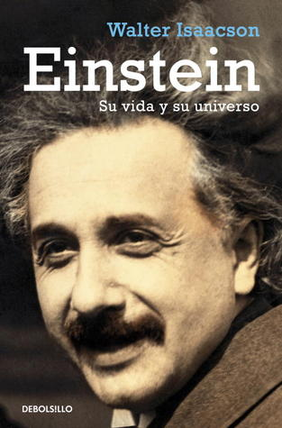

Einstein: Su vida y su universo
Reseña por Jorge I. Zuluaga

Ver reseña en GoodReads (necesita cuenta)
Los lectores y fanáticos de la obra de Walter Isaacson no esperábamos menos de un libro suyo, especialmente al tratarse de un personaje de la talla científica (y casi mitológica) de Albert Einstein.
Leí la biografía mientras preparaba una charla en la que acompañé a Olga Penagos para abordar, desde una perspectiva renovada, la relación del científico judío suizo-americano-alemán (¿cómo definir su identidad nacional?) con la física de origen austrohúngaro (hoy Serbia) Mileva Marić, quien fue madre de sus dos hijos y, por más de 14 años, su amante, protectora, colega y, muy seguramente, coautora de algunos de sus trabajos más importantes.
Precisamente al leer la biografía con la mirada puesta no solo en la relación con Mileva, sino en su vínculo con otras mujeres y con sus hijos, tuve la oportunidad de juzgar mejor la vida de Albert Einstein más allá de sus logros científicos. Einstein siempre había sido para mí un verdadero ídolo, pero con esta perspectiva más amplia, menos restringida a lo técnico y menos afectada por el mito, descubrí a un Einstein nuevo.
Al leer la biografía de Isaacson, descubrí que Einstein fue un hombre relativamente normal para su época. Más allá del genio impoluto, del admirable humanista, del rebelde con causa, del cerebro científico todopoderoso que muchos nos han intentado vender —incluido el mismo Isaacson, que, aunque a ratos reconoce sus imperfecciones, trata de compensarlas con alabanzas y mucha complicidad—, más allá de eso que todos creemos conocer bien, descubrimos aquí al Albert Einstein contradictorio; al machista que, en las cartas a sus colegas y en jocosos ejemplos, se refería a «putas» y a «viejas»; al hombre egoísta que nunca le dio el reconocimiento merecido a Mileva Marić (y quién sabe a cuántos personajes más que no estaban, supuestamente, a su altura); al padre amoroso pero, al mismo tiempo, descuidado y cruel que no se hizo cargo de su hijo enfermo, Tete, aun después de la muerte de Mileva, cuando ya era un personaje millonario y vivía cómodamente en Estados Unidos.
Pero todo esto no hace mala la biografía. Tal vez la hace mejor todavía. Tampoco estas cosas hacen malo a Albert Einstein. Mi admiración por su trabajo científico, por su intuición teórica y por la que todo parece indicar fue una capacidad excepcional para convertir ideas extrañas en verdaderas revoluciones científicas —y hacerlo con ayuda de algunos de sus pares, Mileva incluida—, no se ha reducido significativamente. Es más, en muchos aspectos mi admiración por una parte de Albert Einstein se incrementó (ambos, Olga y yo, compartimos que amamos y odiamos a Einstein casi por mitades mientras leíamos esta y otras biografías relacionadas).
Me ha impresionado muchísimo comprender mejor la dimensión de sus aportes a la teoría cuántica.
Aportes que comenzaron, muy seguramente, con las ideas sobre el efecto fotoeléctrico que consolidó en discusiones a altas horas de la noche con su esposa Mileva en un apartamento en Berna. Que siguieron con sus contribuciones, como quien no quiere la cosa, a la teoría cuántica de la radiación, a la teoría de la emisión estimulada de luz por átomos y moléculas (que condujo a la invención del láser), y a las ideas estadísticas sobre los sistemas formados por muchos fotones. Este último, un trabajo que desarrolló a partir de una idea de Satyendra Nath Bose, al que sí puso como coautor. Las contribuciones de Einstein a la teoría cuántica lo llevaron también a sentar, con sus ingeniosas críticas, las bases filosóficas y epistemológicas de la teoría cuántica moderna.
Albert Einstein y sus colaboradores más cercanos, Mileva Marić, Nath Bose, Boris Podolsky y Nathan Rosen, hicieron mucho más por la teoría cuántica de lo que el científico judío habría deseado.
Me sorprendió descubrir también, gracias al juicioso trabajo de Isaacson y a su rigurosa exposición científica (que me sorprendió por lo completa en una biografía de este tipo), que algunas de las ideas de Einstein de su fallida teoría del campo unificado, en realidad no estaban, al menos conceptualmente, muy lejos de la moderna teoría de la materia y los campos.
El concepto de campo como eje central de la descripción de las fuerzas y de la materia, conjuntamente como se lo imaginó Einstein en los últimos años de vida, es hoy una realidad en la moderna teoría cuántica de campos y en su producto más elaborado, el modelo estándar de las interacciones y las partículas elementales. Einstein no alcanzó a ver los logros de esta ilustrísima hija de la teoría cuántica, a la que tanto criticó, pero si hubiera vivido otros 10 años habría seguramente dicho: «¡se los dije!»; aunque también habría agregado casi inmediatamente: «tal vez sí estaba equivocado con la teoría cuántica».
Con todos sus defectos como ser humano, hay que reconocer, como lo resalta Walter Isaacson, que Einstein se valió de su fama y reconocimiento para apoyar ideas que en su tiempo le podrían valer la vida a cualquiera, incluso la suya propia.
Primero fue el pacifismo, una oposición virulenta y activa a la constitución de ejércitos nacionales y al servicio militar obligatorio. Posiciones muy difíciles de defender en tiempos del surgimiento del nacionalsocialismo en Alemania y de otros fascismos en Europa. Después se atrevió a defender el militarismo, cuando vio que Europa se encaminaba hacia una segunda guerra con un enemigo mucho más brutal. Arriesgando su vida, denunció también los abusos del régimen de Stalin y, a pesar de sus convicciones socialistas, se negó siempre a mostrar oficialmente cualquier simpatía por el régimen criminal del Kremlin. Al final de su vida, se opuso pública y categóricamente a la persecución ideológica en los Estados Unidos de McCarthy y al capitalismo depredador de la nación del norte. Todas estas cosas le valieron el rechazo de sus connacionales (en cada época de su vida), incluyendo el de los políticos y periodistas de los Estados Unidos, el país que lo acogió cuando salió huyendo de Europa en un tiempo en el que su cabeza tenía un valor para el régimen nazi.
Einstein fue un rebelde muy valiente, de los que ya quedan pocos, especialmente en un tiempo en el que sus causas sociales y humanas no han perdido una pizca de actualidad e interés.
Hay muchos detalles de su vida que desconocía completamente y que conocí a través de la biografía. Y no es que debiera saber todo sobre él, pero me preciaba de haber leído un par de biografías que debieron haberme ofrecido un panorama amplio sobre su vida. Pero no. No conocía, por ejemplo, que había tenido un período de profunda fe religiosa cuando era muy joven. Tal vez fue en ese tiempo que se convenció de que existía una inteligencia universal, superior a la inteligencia humana, y que se constituiría a la larga en su dios a la Spinoza. Tampoco sabía de su profunda relación con la causa sionista y, en general, con el pueblo judío, del que se sentía parte. No es incorrecto decir que Einstein fue un físico judío con todas las letras.
En síntesis, leer esta biografía me ha hecho conocer mejor a Einstein, no al mito, sino al ser humano. Sobre todo me sirvió para entender cada vez mejor que mitificar a los grandes personajes de la historia le hace un gran daño, primero a la historia, segundo a otras personas que los rodean y que merecen también su lugar en ella y, tercero, a los seres humanos mismos que encarnan esos mismos mitos.
Leer la biografía también nos sirvió a Olga y a mí para preparar mejor la conferencia y tener mejores elementos de juicio para entender la relación de Einstein con Mileva. Nuestra conclusión fue que la mejor hipótesis que se puede elaborar con base en la evidencia disponible, y después de una mirada enriquecida con la perspectiva feminista, es que Mileva fue coautora, como mínimo, de los trabajos del denominado Annus Mirabilis y que Einstein no le dio el debido reconocimiento que se merecía.
Lean esta biografía. Lean a Isaacson*.
* Quedé un poco dolido con él por su evidente machismo; pero está bien, él también es un hijo de su tiempo y, como a Einstein, no se lo puede mitificar.